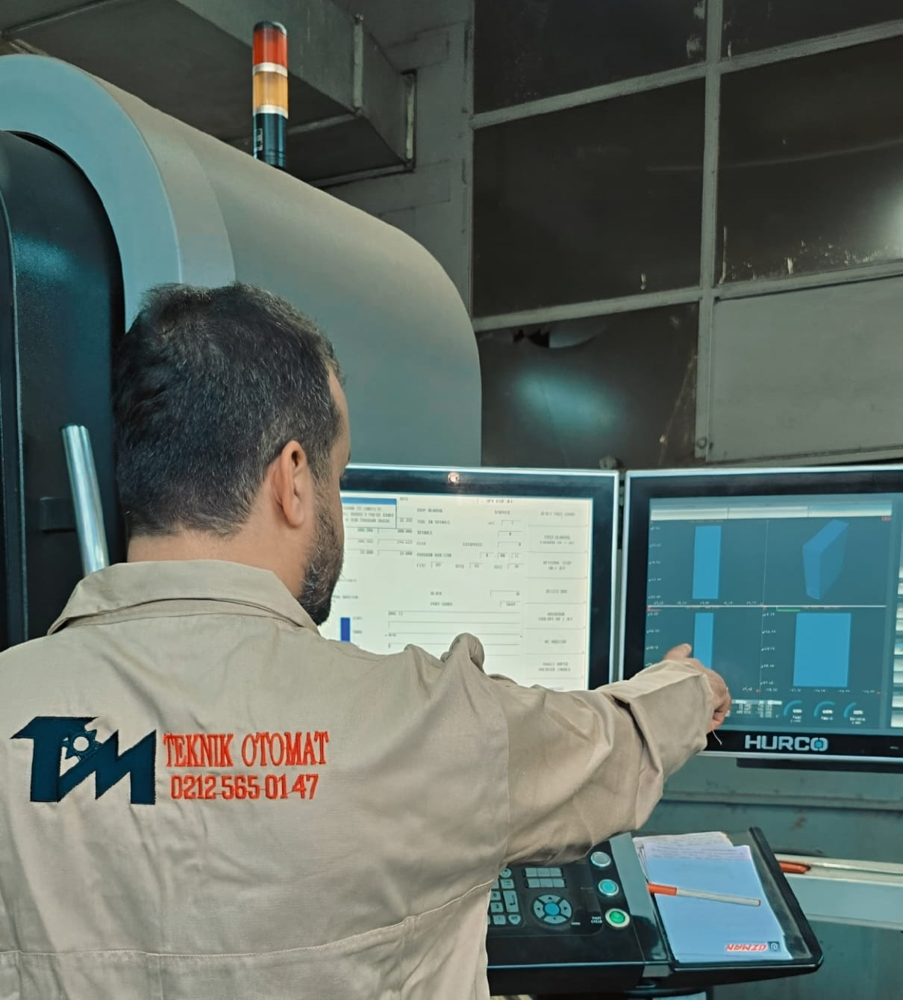

Teknik Otomat Metal İşleme İnş. San. Tic. Ltd. Şti.
20 yılı aşkın tecrübemizle otomotiv, makine, inşaat ve medikal sektörlerinde profesyonel metal işleme çözümleri sunuyoruz.

Teknik Otomat Metal İşleme İnşaat Sanayi ve Ticaret Limited Şirketi, 2004 yılında Ömer Öner ve İnş. Yük. Müh. Veysel Öner tarafından kurulmuş olup, faaliyetlerine talaşlı imalat ve metal işleme alanında başlamıştır. Kuruluşundan bu yana geçen 20 yılı aşkın sürede, yüksek kalite standartları, güçlü mühendislik altyapısı ve müşteri odaklı hizmet anlayışıyla sektöründe güvenilir bir çözüm ortağı haline gelmiştir.
Metal işleme, otomotiv, makine, enerji, inşaat, tarım ve medikal sektörlerine yönelik parça üretimi konularında uzmanlaşan firmamız, hem standart hem de özel tasarım ürünlerde yüksek hassasiyetli imalat çözümleri sunmaktadır. Üretim gücümüzü modern CNC makineleri, ileri teknoloji ölçüm cihazları ve deneyimli teknik kadromuzla birleştirerek, yerli ve yabancı birçok firmaya katma değerli ürün ve hizmetler sağlamaktayız.
Son teknoloji CNC makineleri ile hassas üretim kapasitesi
Alanında deneyimli ve sertifikalı 18 kişilik profesyonel kadro
Farklı sektörlere yönelik özel üretim çözümlerimiz
Otomotiv sektörünün ihtiyaçlarına yönelik geniş yelpazede yedek parça üretimi gerçekleştiriyoruz.
Detaylarİnşaat sektörünün ihtiyaçlarını karşılayan dayanıklı ve güvenli yapı malzemesi üretimi.
DetaylarTarım sektörünün ihtiyaçlarına yönelik dayanıklı ve fonksiyonel parça üretimi.
DetaylarYenilenebilir enerji sistemleri için özel tasarım parça üretimi.
DetaylarEndüstriyel makinalar için hassas toleranslı parça üretimi ve özel çözümler sunuyoruz.
DetaylarSağlık sektörünün yüksek kalite ve hijyen standartlarına uygun medikal malzeme üretimi.
DetaylarTürkiye'de ve dünyada metal işleme ve parça üretimi sektörlerinde teknoloji ve güvenin simgesi olmak.
Sektörel ihtiyaçlara hızlı, kaliteli ve ekonomik çözümler sunarak, müşterilerimize yüksek performanslı ürünler sağlamaktır.
Kalite ve güvenilirlik
Sürekli iyileştirme ve inovasyon
Müşteri memnuniyeti
Etik ticaret ve sürdürülebilir üretim
Bugün, Teknik Otomat, hem yurt içi hem de yurt dışındaki iş ortaklarıyla uzun vadeli iş birlikleri kurmakta; esnek üretim kapasitesi ve çözüm odaklı yaklaşımıyla her geçen gün büyümeye devam etmektedir.
20 yılı aşkın tecrübemiz ve modern teknolojimizle projelerinizi hayata geçiriyoruz.
Hemen İletişime Geçin